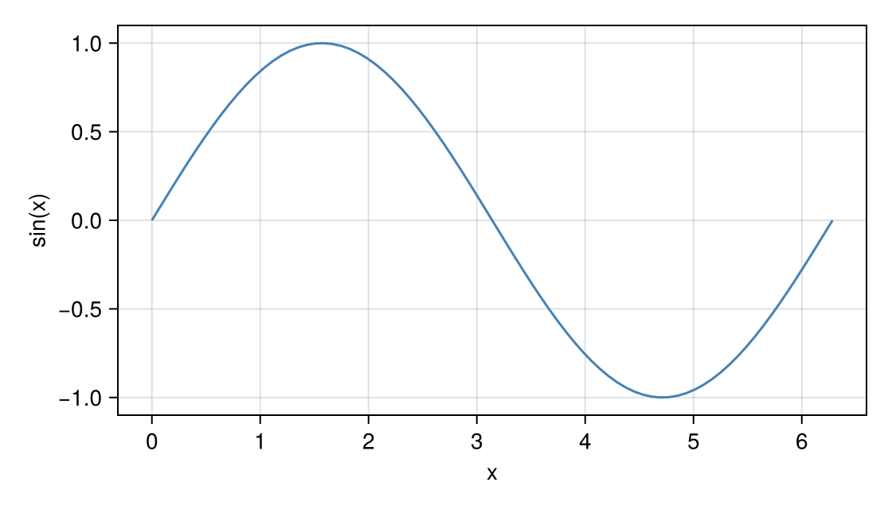

Read coordinates
Sometimes the value you want isn't a mark but a position on the plot: the data coordinates under the pointer, the value a color stands for, or a cutoff you set by dragging a line. masque(fig) makes every colorbar a readout for you. For the other two, pass an AxisInteractable or a ThresholdInteractable to masque yourself.
Read (x, y) from the axis
With an AxisInteractable, a tooltip follows the pointer anywhere on the axis and shows the data coordinates under it. A click sets the readout's field, sel.axis, to an AxisEvent with x and y. The examples on this page call that event pick:
Notebook as text
Move the pointer across the axis, and the tooltip follows it and shows the data coordinates (x, y).
Create the line plot the way you normally would, and add an AxisInteractable for its axis, because masque(fig) does not add one on its own.
begin
xs = range(0, 2π; length = 80)
fig = Figure(size = (560, 320))
ax = Axis(fig[1, 1]; xlabel = "x", ylabel = "sin(x)")
lines!(ax, xs, sin.(xs); color = :steelblue)
ints = AxisInteractable(ax)
nothing
endIn your own notebook, @bind pick saves a click in pick, and bind = ints makes pick the readout's value, with its position in pick.x and pick.y. This page does not record clicks, so only the tooltip works here.
@bind pick masque(fig, ints; auto = false, bind = ints)
Use an axis readout to mark a position where there is no mark, such as the start of a time window or a point to fit from. It works on linear, log, and categorical axes. On a categorical axis, the tooltip shows the category under the pointer, and a click returns the category's position (Makie places categories at 1, 2, …, n) with its label in pick.xcat or pick.ycat. On a numeric axis, that field is nothing.
The example above shows only the tooltip, because this site does not record clicks on a position (Static exports and this site). In your notebook, a click sets sel.axis.
On a PolarAxis, the readout is the angle and radius under the pointer, in the same order as your data: pick.x is the angle in radians and pick.y the radius, swapped when the axis has theta_as_x = false. On an axis that shows only part of the circle, a point drawn below zero degrees reads back as a negative angle. Past the edge of the circle the readout keeps going, as it does past the limits of an ordinary axis.
Read a colorbar value
Hover over a colorbar to see the value its color stands for, and click it to set sel.colorbar to a ColorbarEvent with value. masque(fig) adds a ColorbarInteractable for every Colorbar in the figure, and the heatmap's cells take clicks too, into sel.cells. To have the value be only the colorbar's, create the ColorbarInteractable yourself and pass it as bind:
begin
z = [Float64(i + 3j) for i in 1:4, j in 1:3]
fig = Figure(size = (560, 280))
ax = Axis(fig[1, 1])
hm = heatmap!(ax, 1:4, 1:3, z)
cb = Colorbar(fig[1, 2], hm)
cbint = ColorbarInteractable(cb)
nothing
end@bind pick masque(fig; bind = cbint)pick is nothing until the first click on the colorbar. The cells still show their tooltips, but clicking them does not change pick.
A later cell could use pick.value as a contour level or a threshold for the heatmap.
Drag a threshold
A ThresholdInteractable draws a line across the axis for you to drag. Use it for a cutoff you would otherwise set with a slider, so that you set it against the data itself. The line starts at value. With orientation = :horizontal it sits at constant y and you drag it up and down, and with :vertical it sits at constant x:
begin
ys = [0.2, 0.8, 0.4, 0.9, 0.3, 0.6, 0.1, 0.7]
fig = Figure(size = (560, 320))
ax = Axis(fig[1, 1])
scatter!(ax, 1:8, ys; markersize = 16)
cutoff = ThresholdInteractable(ax; orientation = :horizontal, value = 0.5)
nothing
end@bind level masque(fig; bind = cutoff)bind = cutoff makes level the line's value: the points still show their tooltips, but clicking them does not change level. level is a ThresholdEvent, and level.value is the line's position in data coordinates. It starts at value, and changes when you release the line after a drag:
"$(count(>(level.value), ys)) of $(length(ys)) points above $(round(level.value; digits = 2))"On a categorical axis, the line shows the category while you drag. When you release it, it snaps onto that category, level.value is the category's position, and level.category is its label.
If the axis also has a ViewInteractable, a plain drag moves the threshold and Shift+drag pans. To move the line from the keyboard, press Tab until it has focus, then use the arrow keys; see Keyboard and screen readers.
When the cell that creates the figure runs again, for example because a slider it uses changed, the line and level both go back to value. To keep a cutoff you like, write its number as value in the figure code. Writing value = level.value there does not work, for the same reason a widget cannot take its own value as selected=; see Selection.
Where these work
The axis readout and the threshold need a 2D Axis; see Supported plots and axes for which axes and scales.
One widget can hold several thresholds, boxes, and plots you click, each in its own field. Give each a name with a named tuple, so you know which field is which:
low = ThresholdInteractable(ax; orientation = :horizontal, value = 0.2)
high = ThresholdInteractable(ax; orientation = :horizontal, value = 0.8)
@bind band masque(fig; bind = (low = low, high = high))Then band.low.value and band.high.value are the two lines' positions, and moving one leaves the other's field as it was.
To drag a box instead of a line, see Brush a region.